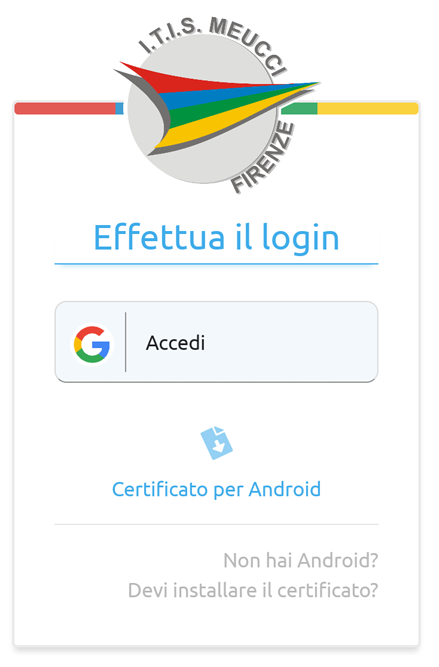
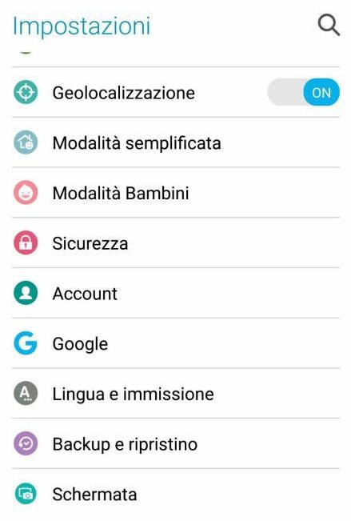
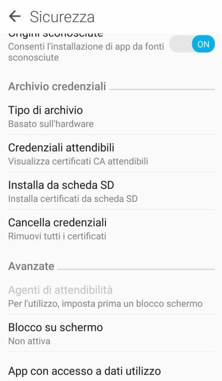
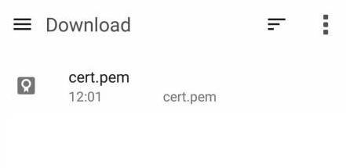
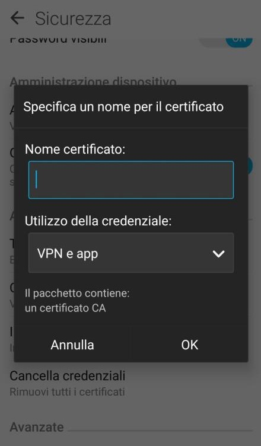
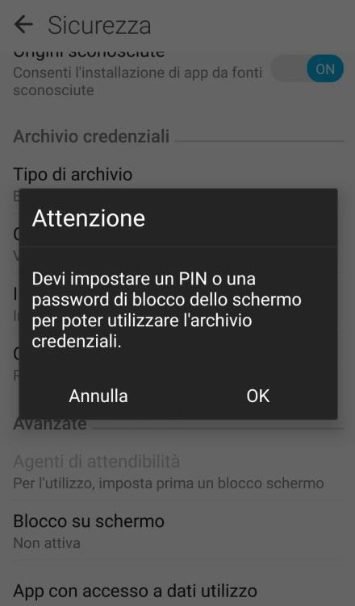

Una volta connessi alla rete si presenta la schermata di accesso come segue.
Premere quindi sul link di download per Android, e scaricare il file .pem
A questo punto andare nel menu Impostazioni del proprio dispositivo Android
Scorrere fino alla sezione Sicurezza (in alcune versioni può chiamarsi Sicurezza e Posizione)
Premere quindi su Installa da scheda SD
Selezionare quindi il file del certificato per procedere con l’installazione.
Digitare un nome per il certificato, assicurarsi che come utilizzo sia impostato “App” e premere OK. Il certificato risulta quindi installato.
Nota: su alcune versioni di Android, viene richiesto l’attivazione di un blocco schermo per poter procedere all’installazione del certificato; questo limite è imposto dallo stesso sistema operativo.
